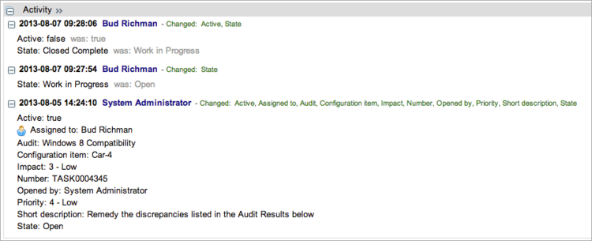

Certification Follow On Tasks
1 Overview
ServiceNow can automatically generate and assign follow-on tasks to correct discrepancies detected during compliance audits. You configure and assign these tasks as needed to qualified users or groups in the audit record. Any follow-on task can be reassigned by a user with the certification_admin role. The Audit Results related list in the Follow On Task form contains links to the records that failed.
2 Accessing Your Tasks
Users with the certification role can only access follow-on tasks assigned to them but can reassign these tasks to other users.
- Navigate to Compliance > My Follow On Tasks.
- Open a task.
- Open records from the Audit Results related list to see each discrepancy.
- Go to the CI named in the record and perform the work needed to bring it into compliance.
- Update the State field in the follow-on task record and add work notes as you correct each discrepancy.
- When you change the state, the system updates the task activity appropriately.
- 
- When the task is Closed Complete it no longer appears on the My Work list.
{kind=link}
{kind=link}
{kind=link}
{kind=link}
3 Managing Follow-On Tasks
Users with the certification_admin or admin role can see all follow-on tasks. Tasks are pre-assigned to a user or group as specified in the audit record but can be reassigned by users with the certification_admin role.
- Navigate to the appropriate application:
- Compliance > Architecture Compliance > Follow On Tasks
- Compliance > Desired State > Follow On Tasks
- Compliance > Scripted Audits > Follow On Tasks
- Open a task.
- The Audit and Configuration item fields are read-only for all users.
- Edit the Assignment group or the Assigned to field if necessary.
- Edit the Short description field if necessary.
- The short description is inherited from the Task description field in the Audit form.
- Use the links in the Audit Results related list to open the individual records that failed the audit.
- If you update the follow-on task record, be sure to add work notes.
{kind=link}
{kind=link}